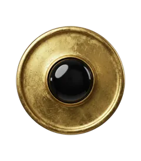

Nouvelle lune
Nouvelle lune de juillet 2027 en Cancer
- Date
- Dimanche 4 juillet 2027
- Heure exacte (Paris)
- 05 h 02
- Signe
- Cancer 11°
Ce qu'elle remue pour chaque signe

Bélier
Cette nouvelle lune ouvre un cycle pour votre foyer et votre famille : un projet de maison, une réconciliation, un besoin de racines.

Taureau
Cette nouvelle lune ouvre un cycle pour vos échanges et votre entourage : une conversation à ouvrir, un apprentissage à commencer.

Gémeaux
Cette nouvelle lune ouvre un cycle pour vos finances et votre valeur : une nouvelle source de revenus, un budget à réinventer.

Cancer
Cette nouvelle lune ouvre un cycle pour un nouveau départ personnel : votre image, votre énergie, vos envies.

Lion
Cette nouvelle lune ouvre un cycle pour votre vie intérieure : repos, introspection, intuition, ce qui se prépare en coulisses.

Vierge
Cette nouvelle lune ouvre un cycle pour vos amitiés et vos projets : un réseau, un collectif, un rêve à long terme.

Balance
Cette nouvelle lune ouvre un cycle pour votre carrière : une ambition à formuler, une nouvelle orientation professionnelle.

Scorpion
Cette nouvelle lune ouvre un cycle pour les horizons lointains : un voyage, une formation, une quête de sens.

Sagittaire
Cette nouvelle lune ouvre un cycle pour les transformations profondes : lâcher un attachement, clarifier une question d'argent commun.

Capricorne
Cette nouvelle lune ouvre un cycle pour le couple et les associations : un nouvel engagement, un contrat, une relation qui commence.

Verseau
Cette nouvelle lune ouvre un cycle pour votre quotidien et votre santé : une nouvelle routine, une meilleure hygiène de vie.

Poissons
Cette nouvelle lune ouvre un cycle pour l'amour, le plaisir et la création : une rencontre, un projet créatif, une envie de légèreté.
Quand a lieu la nouvelle lune de juillet 2027 ?
Nouvelle lune de juillet 2027 : dimanche 4 juillet 2027 à 05 h 02 (heure de Paris), dans le signe du Cancer, à 11°.
Que faire pendant la nouvelle lune ?
La nouvelle lune est un temps de semailles : poser une intention, commencer un projet, prendre une résolution. On l'écrit souvent, pour la relire à la pleine lune suivante.